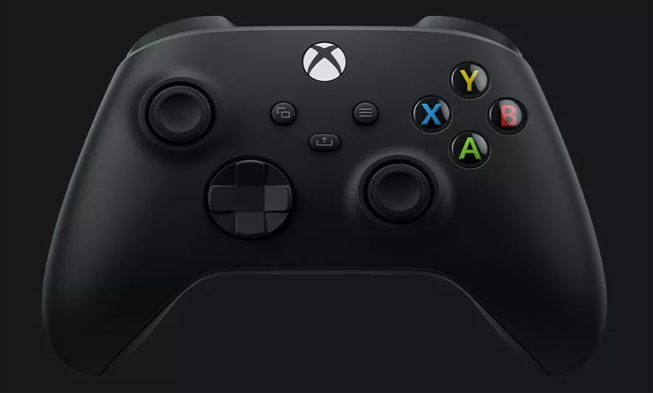

10.10.2020
Релиз Xbox Series X запланирован на конец 2020 года. Внимание прессы и игроков сконцентрировано на самой консоли – и на это есть веские причины. Однако и новый беспроводной контроллер Xbox Series X, идущий в комплекте с приставкой девятого поколения, заслуживает пристального внимания.
На первый взгляд может показаться, что геймпад Xbox Series X практически идентичен контроллеру для Xbox One: во всяком случае, визуально они довольно похожи. Впрочем, Дьявол, как говорится, кроется в деталях. И дизайн Xbox Series X полон не самых очевидных нововведений.
Одна из самых важных, но незаметных перемен – сама форма устройства. Инженеры Microsoft потратили огромное время, чтобы добиться именно таких очертаний контроллера, которые были бы одинаково удобны как для взрослых с большими руками, так и для детей. Такого эффекта удалось добиться простыми средствами – слегка округлив бамперы, уменьшив детали вокруг курков и изменив лепку ручек. Также удобство пользования увеличено благодаря тактильному точечному рисунку на стиках, бамперах и триггерах, которые улучшают сцепление с кнопками.
Еще одна новинка – измененный D-pad. Новый дизайн – гибрид традиционной «крестовины» и плоского диска, который был доступен в качестве сменной опции для геймпада Xbox One Elite. Компромиссный вариант наследует сильные стороны обоих вариантов: с одной стороны, игрок будет легко выполнять точные манипуляции «вверх-вниз» и т.п., с другой – получит возможность выполнять точные диагональные движения. Стоит отметить, что D-pad, бамперы и стики обладают матовым покрытием. Они приятны на ощупь, даже если руки у игрока мокрые.
Самым заметным визуальным нововведением контроллера Xbox Series X стала новая кнопка Share, расположенная на лицевой стороне контроллера. Она позволяет мгновенно сделать скриншот или записать видео, и сразу же поделиться им в социальных сетях или напрямую с друзьями.
Для максимального улучшения взаимосвязи контроллера и Xbox Series X инженеры Microsoft разработали целую серию инновационных программных решений: от новой технологии Dynamic Latency Input (DLI) до автоматической системы в переход низкой задержки. Таким образом удалось заметно увеличить скорость отклика в играх и других приложениях. Особенно заметно это улучшение будет в хардкорных соревновательных играх, требующих моментальной реакции.
Как и другие недавние контроллеры Microsoft, в беспроводном режиме геймпад Xbox Series X использует фирменный сигнал Xbox Wireless. Впрочем, для подключения к сторонним устройствам – ПК, Android, и iOS – он использует технологию Bluetooth LowEnergy (BTLE). Контроллер запоминает несколько последних девайсов, поэтому использование его в быту будет максимально плавным. Важно отметить, что для беспроводной работы геймпада используются АА-батарейки – по мнению Microsoft, они по-прежнему практичней встроенного аккумулятора, так как их легко заменить. Для тех, кто предпочитает провод, предусмотрено стандартное подключение через кабель USB-C.
Подводя итоги, можно сказать, что контроллер Xbox Series X – золотой стандарт качества индустрии. Некоторые могут упрекнуть Microsoft в консервативности, ведь новый геймпад не может похвастаться невиданными прежде особенностями. Однако каждая кнопка на новом устройстве максимально точно и с комфортом для пользователя выполняет свою функцию. И на самом деле это – именно то, чего мы хотим от игрового контроллера.